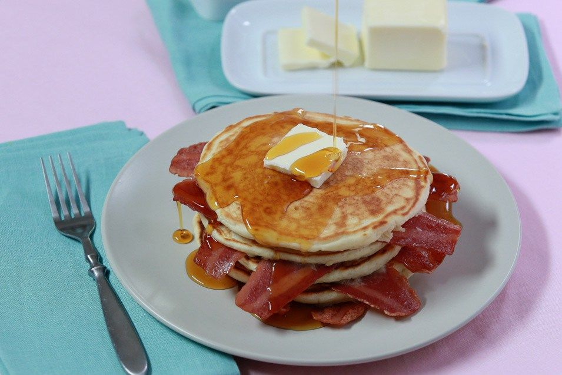

Bacon Pancake

Description
It's just as easy (and delicious!) as Jake the Dog says: you make some
bacon and you put it in a pancake! This is simple and mouth-watering
breakfast from The Geeky Chef is perfect for any venturing hero.
INGREDIENTS
- 10 strips of bacon, fried until crispy
- 1 cup flour
- 2 tablespoons sugar
- 1 teaspoon baking powder
- Pinch of baking soda
- 2 tablespoons of melted butter, plus extra for frying
- ¾ cup buttermilk
- 1 egg
- Pinch of salt
- Maple syrup for serving
STEPS IN MAKING JAKE'S SPECIALTY
-
Stir together the flour, sugar, baking powder, and baking soda in a
mixing bowl. In a separate bowl, whisk the melted butter and buttermilk
together, then add the egg.
-
Combine the flour mixture with the buttermilk mixture and whisk until
they're combined and free of lumps.
-
Melt some additional butter on a large skillet, and add bacon strips
with space between each. Pour the batter down each bacon strip until it
is covered. Make sure to leave space between each cake!
-
Cook until the batter bubbles, then flip. Serve the pancakes drizzled
with maple syrup.